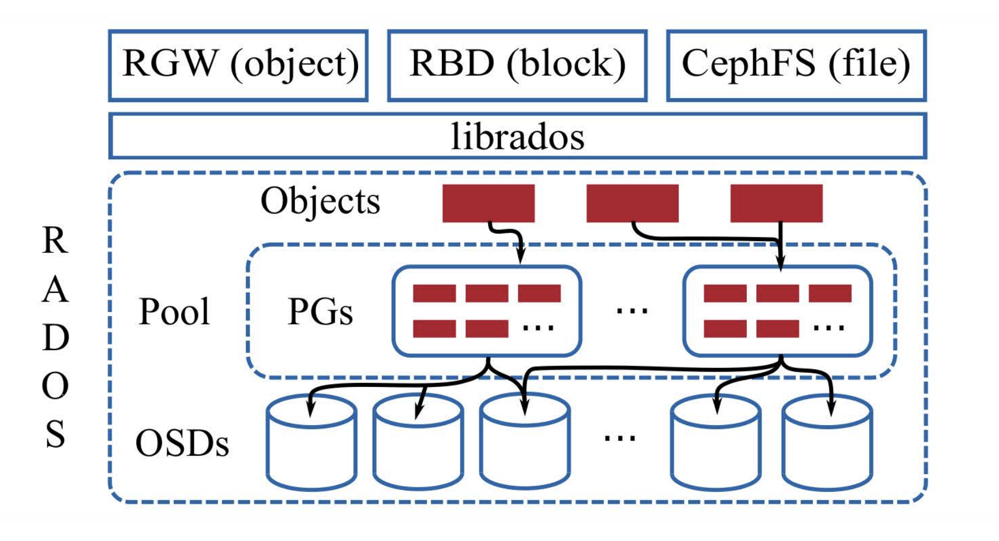
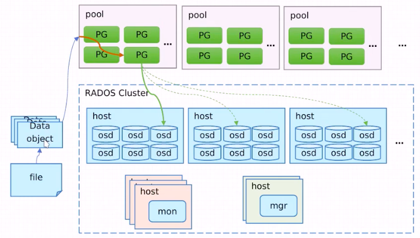
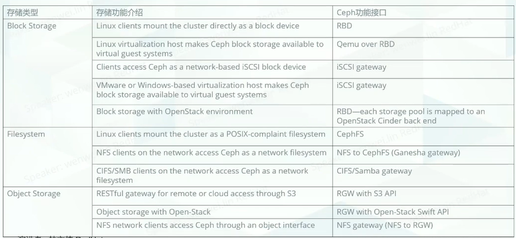

Ceph架构图 #


架构[2] #
基础存储系统
- rados:基础存现系统RADOS(Reliable,Autonomic,Distribuuted object store，既可靠的、自动化的、分布式的对象存储).所有存储在Ceph系统中的用户数据事实上最终都是由这一层来存储的。Ceph的高可靠、高可扩展、高性能、高自动化等等特性本质上也是由这一层所提供的。
- RADOS -
RADOS全称Reliable Autonomic Distrubuted object Store,是Ceph集群的精华，用户实现数据分配，Failover等集群操作
基础库librados:
- librodos:这一层的功能是对RADOS进行抽象和封装，并向上层提供API，以便直接基于RADOS进行应用开发。特别要注意的是，RADOS是一个对象存储系统，因此，librodos实现的API也只是针对对象存储功能的。
- Libradio -
Librados是RODOS提供库，因为RADOS是协议很难直接访问，因此上层的RBD、RGW和CephFS都是通过librados访问的，目前提供PHP、Ruby、Java、Python、C和C++支持。
高层应用接口
- radosgw:对象网关接口
- rbd:块存储
- cephfs：文件系统存储，其作用是在librodos库的基础上提供抽象层次更高、更便于应用或客户端使用的上层接口。
- RBD -
RBD全称RADOS Block Device，是ceph对外提供服务的块设备服务。 - RGW -
RGW全称RADOS gateway,是ceph对外提供的对象存储服务，接口与S3和Swift兼容 - CephFS -
CephFS全称Ceph File System，是ceph对外提供的文件系统服务。
Ceph主要有三个基本进程[2][5] #
-
osd:
用于集群中所有数据与对象的存储。处理集群数据的复制、恢复、回填、再负载。并向其他osd守护进程发送心跳，然后向Mon提供一些监控信息。
当Ceph存储集群设定数据有两个副本时，则至少需要两个OSD守护进程即OSD节点，集群才能达到active+clean状态。 -
MDS(可选)
为Ceph文件系统提供元数据计算、缓存与同步(也就是说，ceph块设备和ceph对象存储不使用MDS)。在ceph中，元数据也是存储在osd节点中的，mds类似于元数据的代理缓存服务器。MDS进程并不是必须的进程，只有需要使用CEPHFS时，才需要配置MDS节点。 -
Monitor
监控整个集群的状态，维护集群的cluster MA二进制表，保证集群数据的一致性。ClusterMAP描述了对象存储的物理位置，以及一个将设备聚合到物理位置的桶列表。 -
Manager(ceph-mgr)
用于收集ceph集群状态，运行指标，比如存储利用率、当前性能指标和系统负载。对外提供ceph dashboard(ceph-ui)和resetful api,manger组件开启高可用时，至少2个 -
MDS -
MDS全称Ceph Metadata Server，是CephFS服务依赖的元数据服务 -
Monitor -
监控整个集群的状态，维护集群的cluster MA二进制表，保证集群数据的一致性 -
OSD -
OSD全程Object storage Device,也就是负责响应客户端请求返回具体数据的进程。一个Ceph集群一般都有很多个OSD
- rbd: 不需要部署独立的守护进程
- Cephfs 需要部署独立的守护进程 MDS
- 对象存储 需要部署独立的守护进程 radosgw
生产环境
- Monitor 需要至少3个
- Manager 需要至少2个
Ceph核心组件及概念介绍[2][6] #
- Object
Ceph最底层的存储单元是Object对象，每个object包含数据和原始数据。
[自带元数据]
[id + binary data + metadate(key+value)] - PG
PG全称Placement Grouops,是一个逻辑的概念，一个PG包含多个OSD。引入PG这一层其实是为了更好的分配数据和定位数据。 - CRUSH
CRUSH是Ceph使用的数据分布算法，类似一致性哈希，让数据分配到预期的地方。 - Ceph纠删码
[数据保护, 数据恢复] - 客户端的数据条带化
存储内容进行顺序分片, 分布式存储每个分片
ceph支持的存储接口[7] #

部署 & 工具 #
- ceph ansible
主流 - rook operator
- 超融合模式
混合部署 资源预留 - 存算分离模式
ceph独立部署, 打label
- 超融合模式
- 工具
RedHat OCS sizing tool
场景[7] #
- openstack
静态化 - 云原生 rook
- 动态化
动态扩缩容 - 支持混合云，多云场景
通过CSI接口，提供混合云环境下的一致性 - 拓扑感知
副本分到到3个rack中
跨AZ的多副本 - multus管理网络， 提升性能[pic]
管理网 - ovs
ceph private network - vlan10
ceph public network - vlan20
- 动态化
- 占比
- Ceph RBD - 48%
- LVM - 15%
- NFS - 8%